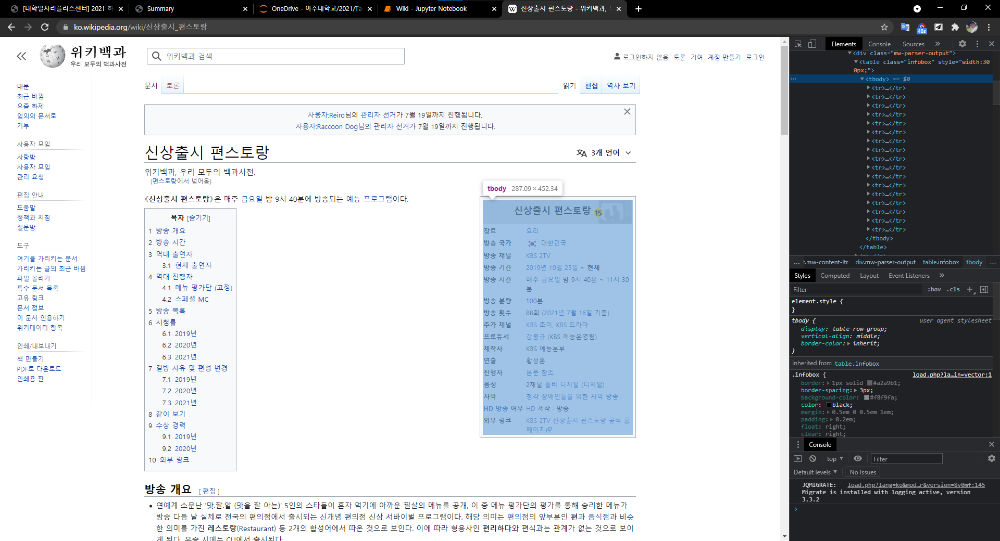
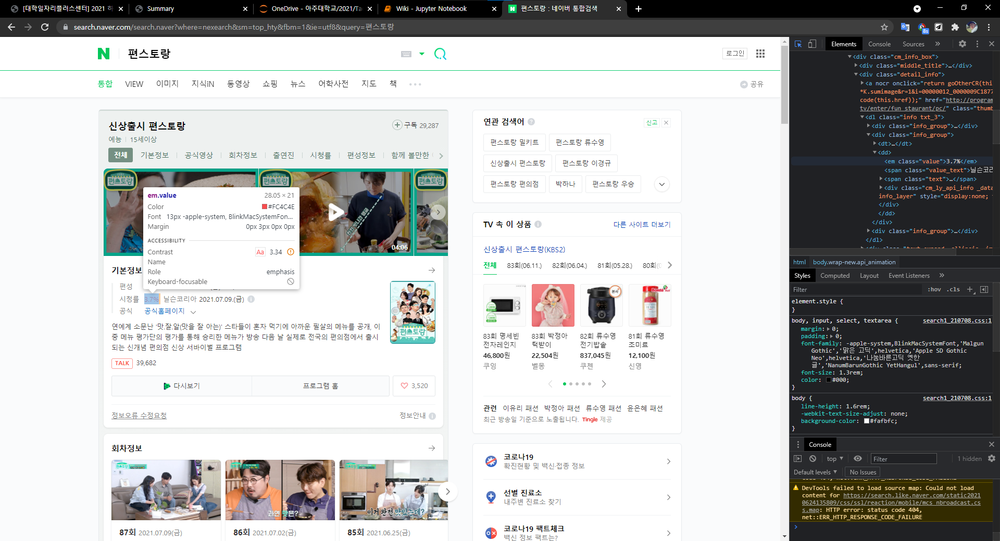
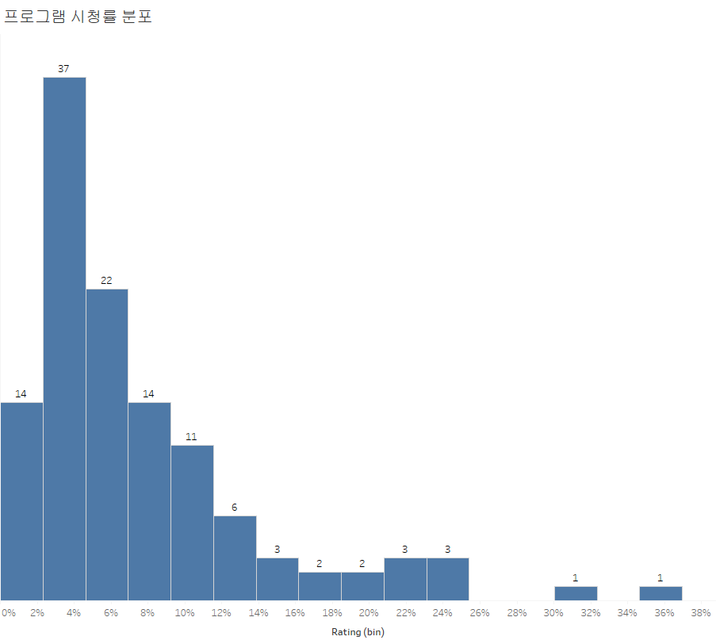

상품별 프로그램 추천을 위해서는 프로그램 정보가 있어야 합니다.
그래서 Wikipedia를 통해 과거 예능, 드라마 TV 프로그램 정보를 가지고 오는 실습을 해 보려고 합니다.
사용하는 라이브러리는 urllib, BeautifulSoup 등이 있습니다.
import pandas as pd
import numpy as np
import re
from bs4 import BeautifulSoup
import urllib.request
from urllib import parse직접 프로그램 목록을 작성하여 엑셀 파일로 만들었습니다.
programs = pd.read_excel(r"C:\Users\TFG5076XG\Documents\pythoncodes\data\프로그램 목록.xlsx")크롤링 과정은 다음과 같은 순서로 진행했습니다.
baseurl = "https://ko.wikipedia.org/wiki/"programs["suburl"] = programs["프로그램명"].apply(lambda x: re.sub(" ", "_", x))programs["quote"] = programs["suburl"].apply(lambda x: parse.quote(x))programs["url"] = baseurl + programs["quote"]programs["values"] = ""dramas = pd.read_csv("dramas_df.csv")
dramas = dramas.drop("Unnamed: 0", axis = 1)
dramas.columns.values[0] = "프로그램명"programs = pd.concat([programs.drop(["suburl","quote"], axis = 1), dramas], axis = 0, ignore_index=True)programs["values"][programs["values"].isnull()] = ""
위의 사진처럼 표에 TV 프로그램에 대한 정보가 들어 가 있습니다.
주의해야 할 점은 TV 프로그램마다 표의 속성 길이가 다르기 때문에 예외 처리를 해 주어야 합니다.
idx = 0
for link in programs["url"]:
dic = dict()
page = urllib.request.urlopen(link).read().decode("utf-8")
soup = BeautifulSoup(page, "html.parser")
for i in range(len(soup.find("table").find_all("tr"))):
if len(soup.find("table").find_all("tr")[i].find_all("th")) != 0:
# print(soup.find("table").find_all("tr")[i].find("th").text,
# soup.find("table").find_all("tr")[i].find("td").text.strip())
dic[soup.find("table").find_all("tr")[i].find("th").text.strip()] = \
soup.find("table").find_all("tr")[i].find("td").text.strip()
# print("------")
else:
pass
programs["values"][idx] = dic
idx += 1
또한 네이버에서 프로그램의 시청률 정보를 크롤링 해 주었습니다.
여기도 정보가 없는 곳은 에러를 방지하기 위해 try, except 문으로 예외처리를 해 줍니다.
programs["rating"] = ""idx_rating = programs.columns.get_loc("rating")for i in range(len(programs)):
word_parsed = parse.quote(programs["프로그램명"][i])
naver_url = naver_baseurl + word_parsed
html = urllib.request.urlopen(naver_url).read().decode("utf-8")
soup = BeautifulSoup(html, "html.parser")
try:
programs.iat[i,idx_rating] = soup.find("em", class_="value").text
except AttributeError:
programs.iat[i,idx_rating] = ""programsprograms["values"][0]["장르"]programs["장르"] = ""
programs["방송 채널"] = ""
programs["방송 시간"] = ""idx_genre = programs.columns.get_loc("장르")idx_genreprogramsprograms.iat[0, idx_genre]programs["values"][2]["장르"]
programs["values"][2]["방송 채널"]
programs["values"][2]["방송 시간"]attr_list = ["장르", "방송 채널", "방송 시간"]for i in range(len(programs)):
for attr in attr_list:
# print(i)
try:
programs.iat[i, programs.columns.get_loc(attr)] = programs["values"][i][attr]
except :
programs.iat[i, programs.columns.get_loc(attr)] = ""programs = readr::read_csv("programs.csv")
knitr::kable(head(programs[,c("프로그램명", "rating", "장르", "방송 채널", "방송 시간")]))| 프로그램명 | rating | 장르 | 방송 채널 | 방송 시간 |
|---|---|---|---|---|
| 배틀트립 | 7.4% | 관찰 버라이어티, 여행 | KBS 2TV | 매주 금요일 밤 8:30 ~ 9:45 |
| 신상출시 편스토랑 | 3.7% | 요리 | KBS 2TV | 매주 금요일 밤 9시 40분 ~ 11시 30분 |
| 옥탑방의 문제아들 | 3.2% | 리얼 버라이어티 | KBS 2TV | 매주 화요일 밤 10시 40분 ~ 12시 |
| 사장님 귀는 당나귀 귀 | 6.2% | 관찰 버라이어티 | KBS2, U-KBS HEART | 매주 일요일 오후 5:00 ~ 6:30 |
| 슈퍼맨이 돌아왔다 | 5.7% | 관찰 버라이어티 | KBS 2TV | 일요일 밤 9:15 ~ 11:05 |
| 구해줘! 홈즈 | 5.2% | 리얼 버라이어티, 생활 | MBC TV | 매주 일요일 밤 10:40 ~ 12:20 |
완성된 TV 프로그램 정보 테이블은 위와 같은 모양을 가집니다.
table = programs[!is.na(programs$rating),] %>%
select(프로그램명, rating) %>%
mutate(rating = as.double(stringr::str_remove(rating, "%")))
간단하게 시청률 분포를 보면 2-4% 대의 프로그램이 많은 것을 볼 수 있습니다.
흔치 않게 36% 정도를 기록한 프로그램도 있습니다. 확인 해보니 KBS2의 주말 가족드라마로 보입니다.
# programs.to_csv("programs.csv", index = False)